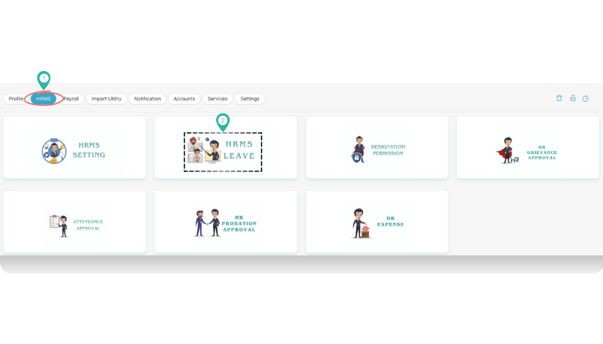
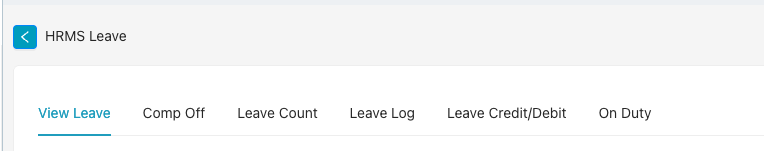
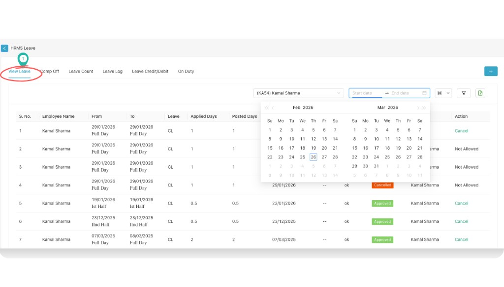
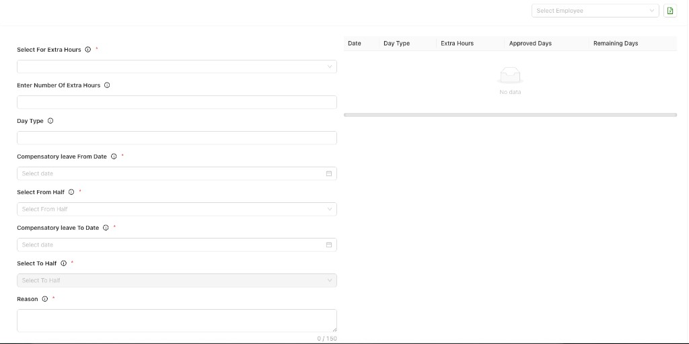
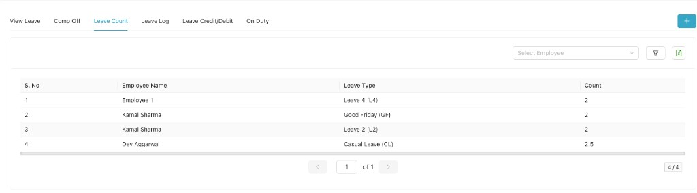
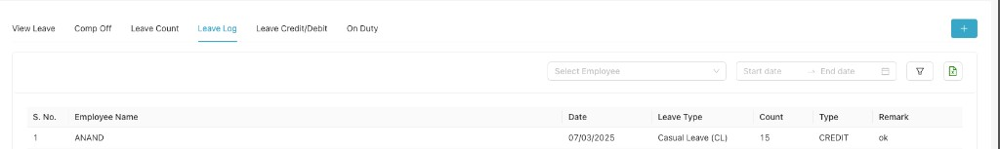
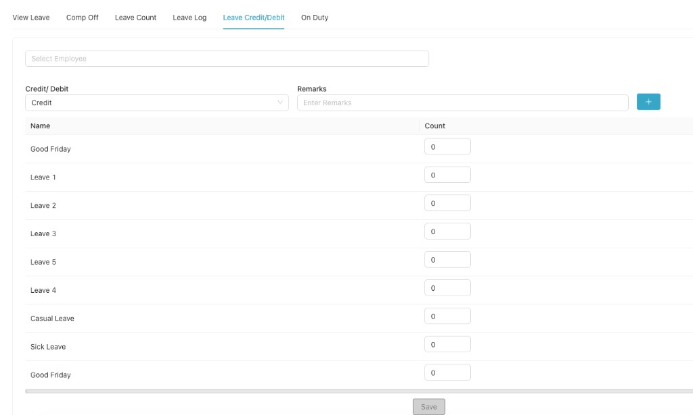
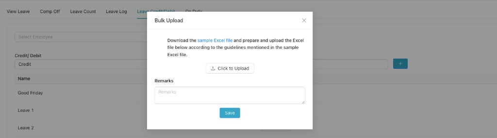
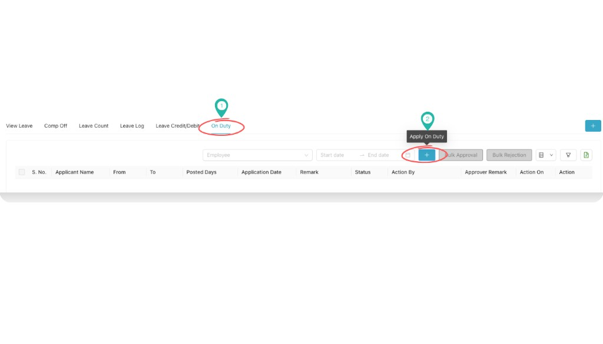
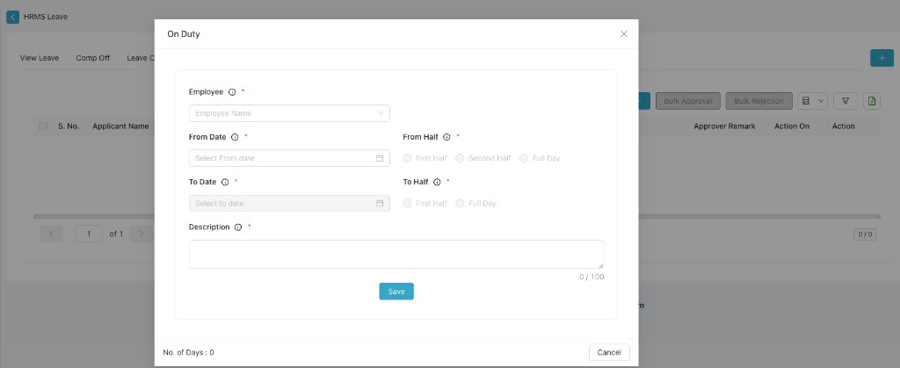

HRMS Leave
Open the HRMS Leave module from Part C HR Desk (Dashboard → Profile settings → HRMS → HRMS Leave). Inside the module you get six tabs: View Leave, Comp Off, Leave Count, Leave Log, Leave Credit/Debit, and On Duty.
Path
How to open HRMS Leave
Go to Dashboard
From the left navigation, click Dashboard so that you are on the main dashboard view.

Select profile settings
In the top-right corner, click your profile name or the person icon. From the menu, select Profile settings.
From profile settings, select HRMS
In profile settings, click HRMS in the top navigation. You will see the HR Desk cards.

Open HRMS Leave
Click the HRMS LEAVE card. The HRMS Leave module opens with six tabs: View Leave, Comp Off, Leave Count, Leave Log, Leave Credit/Debit, and On Duty. The sections below describe each tab.

a.) View Leave
Use the View Leave tab to see leave records for any employee. Filter by employee (dropdown), and by Start date and End date. Use the blue + button to add or manage leave. The table columns are:

| Column | Description |
|---|---|
| S. No. | Serial number |
| Employee Name | Name of the employee |
| From | Leave start date and half/full (e.g. Full Day, Ist Half, IInd Half) |
| To | Leave end date and half/full |
| Leave | Leave type (e.g. CL, SL) |
| Applied Days | Number of days applied |
| Posted Days | Days posted/approved |
| Application Date | Date of application |
| Proof | Attached proof if any |
| Remark | Remarks |
| Status | e.g. Approved, Cancelled |
| Action By | Who took action |
| Action | Link to cancel or other action |
b.) Comp Off
The Comp Off tab is for compensatory leave. Use Select Employee at the top right to choose an employee. On the left, fill the compensatory leave form; on the right, a table shows records (Date, Day Type, Extra Hours, Approved Days, Remaining Days). Form fields:
- Select For Extra Hours * (required)
- Enter Number Of Extra Hours
- Day Type
- Compensatory leave From Date *
- Select From Half * (e.g. First Half, Second Half, Full Day)
- Compensatory leave To Date *
- Select To Half *
- Reason * (max 150 characters)

c.) Leave Count
Use Leave Count to see leave balances per employee and leave type. Filter by Select Employee; use the + button, filter icon, and export icon as needed. Table columns:
| S. No. | Employee Name | Leave Type | Count |
|---|---|---|---|
| 1 | — | — | — |

d.) Leave Log
The Leave Log tab shows a log of leave transactions. Filter by Select Employee, Start date, and End date; use the export (e.g. Excel) icon to download. Table columns:
| S. No. | Employee Name | Date | Leave Type | Count | Type | Remark |
|---|---|---|---|---|---|---|
| 1 | — | — | — | — | CREDIT / DEBIT | — |

e.) Leave Credit/Debit
Use Leave Credit/Debit to credit or debit leave for an employee. Select the employee, choose Credit or Debit, add Remarks, then enter the Count for each leave type (Good Friday, Leave 1–5, Casual Leave, Sick Leave, etc.). Click Save to apply.
Bulk upload: Download the sample Excel file, prepare your file as per the guidelines in the sample, then use Click to Upload to upload the Excel file. Add Remarks if needed and click Save.


f.) On Duty
The On Duty tab lists on-duty applications. Filter by Employee, Start date, and End date. Use the blue + (Apply On Duty) to add an application; use Bulk Approval or Bulk Rejection for multiple records. Table columns:
| Column |
|---|
| S. No. |
| Applicant Name |
| From |
| To |
| Posted Days |
| Application Date |
| Remark |
| Status |
| Action By |
| Approver Remark |
| Action On |
| Action |

Apply On Duty form: When you click the + (Apply On Duty) button, an On Duty pop-up opens. Fill all required fields (marked *), then click Save or Cancel to close.
- Employee * — Select employee name from the dropdown.
- From Date * — Select the start date (calendar icon).
- From Half * — Choose First Half, Second Half, or Full Day.
- To Date * — Select the end date (calendar icon).
- To Half * — Choose First Half or Full Day.
- Description * — Enter a short description (max 100 characters; counter shown as 0/100).
The form shows No. of Days at the bottom (calculated from the dates). Click Save to submit the on-duty application or Cancel to close without saving.

Video Tutorial
Click a video below to watch on YouTube and learn how to use the HRMS Leave module in CA Cloud Desk.
Tutorial 1

Tutorial 2